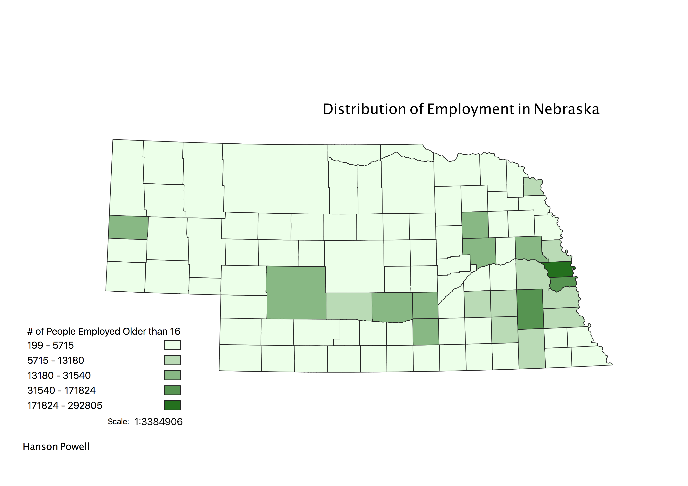

Homework 7: Census data choropleth
Hanson Powell
This map shows a choropleth of employment in the State of Nebraska. Population in general in Nebraska is sparse pretty much everywhere except around the capital of Lincoln and surrounding areas like Omaha. My map reflects that these areas also have the higest number of people employed.

Data Used for This Project
CSV dataset
Link to geoJSON